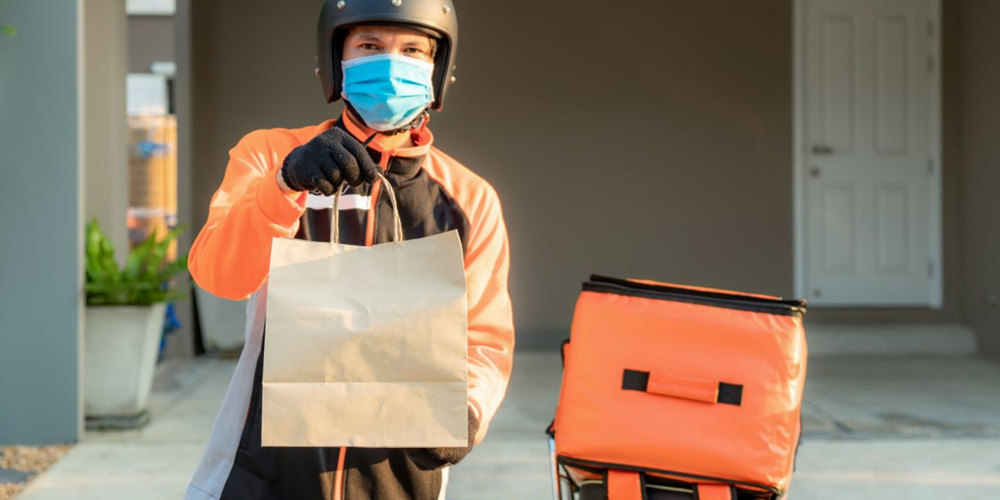

¿Desea vender o comprar bienes y servicios sin riesgos?
¡Vamos a conocer la aplicación a profundidad!
¿Qué es Get It Safely?
GetIt Safely nace como una herramienta que permite tanto al Gobierno de Costa Rica como a los comercios que deseen afiliarse a esta aplicación gestionar de una manera más sencilla la atencion a clientes que requieren de bienes y servicios durante la epoca de pandemia que experimenta el país a causa del SARS Covid 2
Nuestro Nombre
La solución Get It Safely se nombra en base a las circunstancias que afronta el estado costarricence ante la pandemia de SARS Covid 2. Es debido a esto que la aplicación pretende dar respuesta a las necesidades de productos y servicios de aquellos clientes que lo necesiten sin tener que salir de su hogar.